Struktur Peran & Akses Website HC Prime
Referensi kontekstual sebelum masuk ke prosedur BAB X. Website HC Prime menggunakan RBAC
(Role-Based Access Control) dengan 10 role yang dikelompokkan ke dalam 6 level hierarki.
Setiap role memiliki lingkup akses dan default view berbeda.
1. Hierarki Role (Level 1–6)
| Level | Role | Kelompok | Lingkup Akses |
|---|
| 1 | Admin | System Administrator | Full access — seluruh fitur sistem, maintenance, audit, impersonation. Back-up teknis. |
| 2 | HC | Human Capital | Full access — seluruh fitur CMP, CDP, Kelola Data. Pengelola operasional utama. |
| 3 | Direktur | Management | Full access (read-weighted) — dashboard, seluruh tim; tidak mengelola data master. |
| 3 | VP |
| 3 | Manager |
| 4 | Section Head | Section Supervisory | Akses tingkat seksi — IDP & deliverable seluruh coachee dalam satu seksi, approval tingkat bagian. |
| 4 | Sr Supervisor |
| 5 | Coach | Coaching | Akses ke coachee yang di-map. Upload evidence, input sesi PROTON, lihat IDP coachee. |
| 5 | Supervisor | Akses view sama dengan Coach, tanpa coachee mapping. |
| 6 | Coachee | Operational | Akses ke data sendiri — IDP, assessment, records, sertifikat, histori coaching personal. |
2. Default View per Role
Website memilih tampilan default berbeda untuk setiap role saat login. Ini menentukan widget dan menu yang paling menonjol di halaman Beranda.
| Role | Default View | Karakteristik Tampilan |
|---|
| Admin | Admin | Dashboard sistem, alert sertifikat expired, akses Kelola Data. |
| HC | HC | Analytics dashboard, Kelola Data, ringkasan status pekerja lintas bagian. |
| Direktur / VP / Manager / Section Head / Sr Supervisor | Atasan | Team view, progress bawahan, ringkasan assessment/coaching seksi. |
| Coach / Supervisor | Coach | Daftar coachee yang di-map, pending approval deliverable, histori coaching. |
| Coachee (+ semua role lain) | Coachee | IDP pribadi, assessment ditugaskan, progress personal, sertifikat pribadi. |
3. Pemetaan Position (Jabatan) ↔ Role Default
Position adalah nama jabatan struktural di PT KPB. Saat HC menambahkan pekerja baru, field Role dipilih terpisah dari Position. Tabel berikut adalah rekomendasi mapping default yang umum dipakai.
| Position / Jabatan | Role Default | Contoh Fungsi |
|---|
| Direktur Operasi | Direktur | Pimpinan Direktorat |
| VP Refinery / VP HC & Corp. Services | VP | Pimpinan Fungsi Level VP |
| Manager Process / Manager HC | Manager | Manager Fungsi |
| Section Head (GAST, NGP, RFCC, DHT & HMU, Utilities II) | Section Head | Kepala Seksi |
| Sr Supervisor / Senior Supervisor Shift | Sr Supervisor | Atasan langsung Shift Supervisor |
| Shift Supervisor | Coach / Supervisor | Atasan langsung Operator/Panelman; bila di-map sebagai pembina coachee → Coach |
| Panelman (Control Room Operator) | Coachee | Operator DCS/HMI |
| Operator (Field Operator) | Coachee | Field operator per unit |
| HC Staff (Jr./Sr. Analyst, Business Partner) | HC | Pengelola platform kompetensi |
| System Administrator (IT) | Admin | Back-up teknis sistem |
4. Matriks Akses per Halaman
✅ = akses penuh (baca & tulis) · 👁 = read-only (data sendiri/bawahan) · — = tidak punya akses
| Halaman / Fitur |
Admin |
HC |
Atasan |
Coach |
Coachee |
| AKSES & BERANDA |
| Login / Beranda / Profil | ✅ | ✅ | ✅ | ✅ | ✅ |
| MODUL CMP — Competency Management |
| Dokumen KKJ — lihat | ✅ | ✅ | ✅ | ✅ | ✅ |
| Ikut Assessment Online | ✅ | ✅ | ✅ | ✅ | ✅ |
| Records (rekam jejak pribadi) | ✅ | ✅ | ✅ | ✅ | ✅ |
| Records Team (rekam jejak tim) | ✅ | ✅ | 👁 | 👁 | — |
| Certification Management | ✅ | ✅ | 👁 | 👁 | 👁 |
| Analytics Dashboard | ✅ | ✅ | — | — | — |
| Budget Training | ✅ | ✅ | — | — | — |
| MODUL CDP — Career Development |
| Plan IDP — lihat silabus | ✅ | ✅ | 👁 | 👁 | 👁 |
| Coaching PROTON — input sesi & upload evidence | ✅ | ✅ | ✅ | ✅ | — |
| Deliverable — approve / reject | ✅ | ✅ | ✅ | — | — |
| Deliverable — HC Review final | ✅ | ✅ | — | — | — |
| Histori PROTON | ✅ | ✅ | 👁 | 👁 | 👁 |
| MODUL HC — Pengelolaan Data |
| Worker Management (CRUD + Import) | ✅ | ✅ | — | — | — |
| Organization Structure | ✅ | ✅ | — | — | — |
| Coach-Coachee Mapping & Workload | ✅ | ✅ | — | — | — |
| Kategori & Paket Assessment | ✅ | ✅ | — | — | — |
| Assessment Monitoring (real-time) | ✅ | ✅ | — | — | — |
| Upload Dokumen KKJ / CPDP | ✅ | ✅ | — | — | — |
| PROTON Data (silabus & guidance) | ✅ | ✅ | — | — | — |
| Renewal Certificate | ✅ | ✅ | — | — | — |
| SISTEM & MONITORING (non-TKI) |
| Notifikasi | ✅ | ✅ | ✅ | ✅ | ✅ |
| Audit Log | ✅ | ✅ | — | — | — |
| Maintenance Mode | ✅ | ✅ | — | — | — |
| Impersonation | ✅ | ✅ | — | — | — |
Catatan: Matriks ini hasil ekstraksi dari atribut [Authorize(Roles=...)] pada controller (UserRoles.RolesCoachAndAbove, UserRoles.RolesReviewerAndAbove) dan aturan row-level scoping (Coach hanya lihat coachee yang di-map; Atasan hanya lihat bawahan dalam seksi yang sama).
X. INSTRUKSI KERJA
A. AKSES
1. Login ke HC Prime
a. USERBuka URL http://10.55.3.3/KPB-PortalHC melalui browser (Chrome/Edge/Firefox).
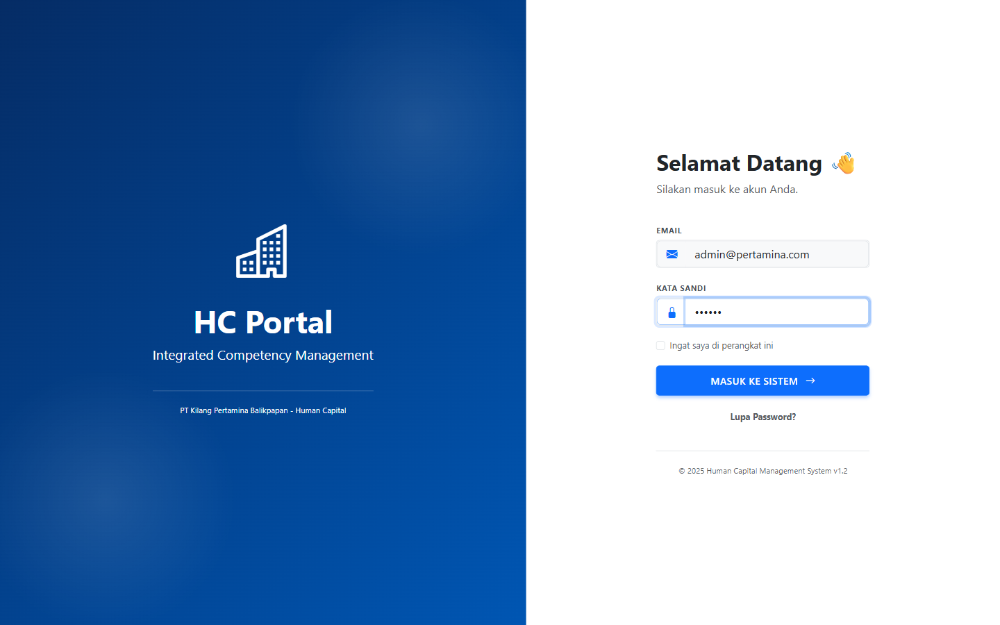
b. USERMasukkan email Pertamina (nama.lengkap@pertamina.com) dan password.
c. USERKlik tombol "Login".
d. USERBila kredensial valid, sistem mengarahkan ke halaman Beranda sesuai peran pengguna.
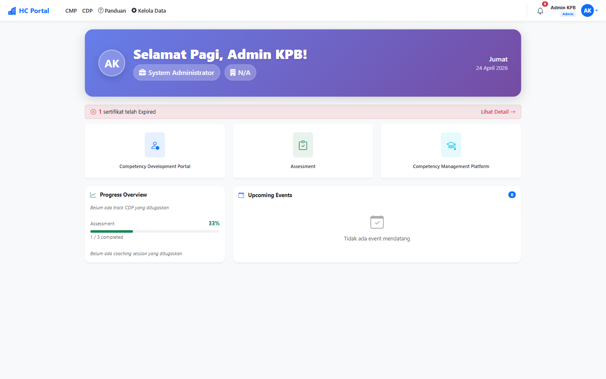
B. MODUL CMP — COMPETENCY MANAGEMENT
1. Melihat KKJ Pribadi (Kebutuhan Kompetensi Jabatan)
a. USERPada halaman Beranda, klik menu CMP.
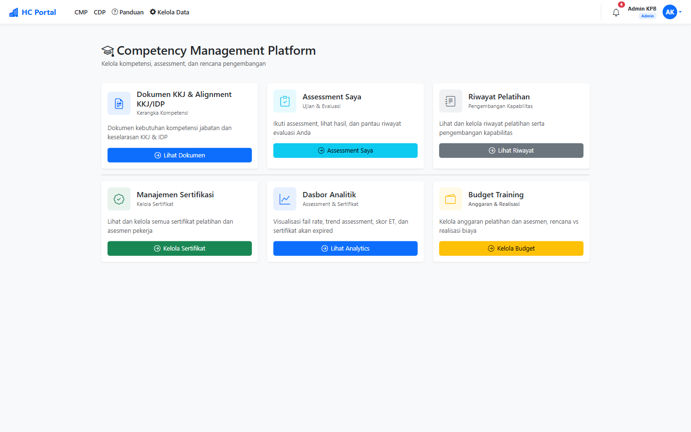
b. USERKlik kartu "Dokumen KKJ". Sistem menampilkan daftar KKJ sesuai jabatan pengguna.
c. USERKlik ikon unduh untuk mendapatkan dokumen matriks KKJ (PDF/Excel).
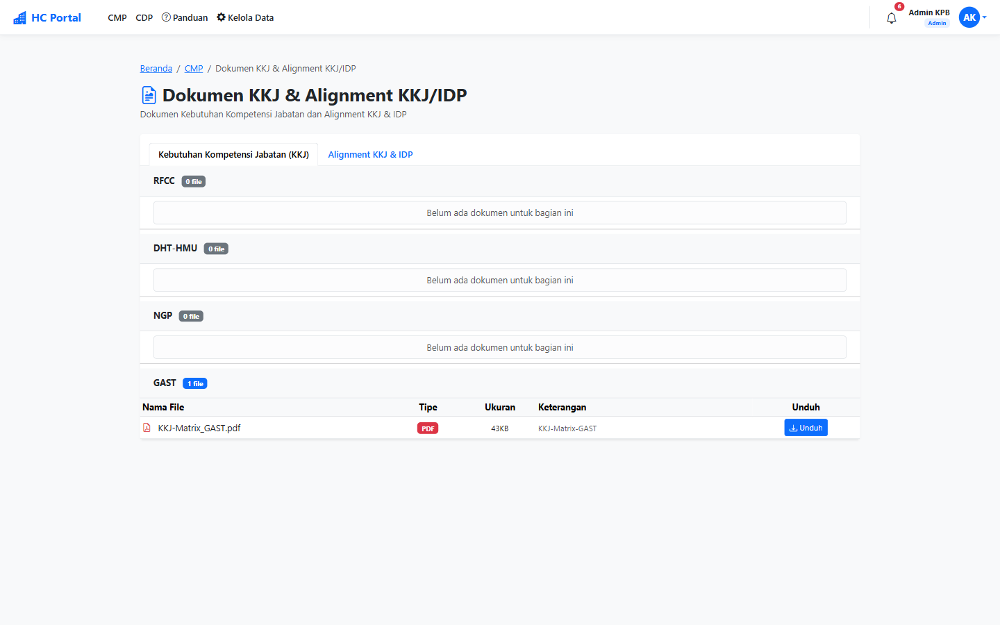
2. Melihat Matriks KKJ Bagian (Atasan)
a. ATASANBuka menu CMP > Dokumen KKJ.
b. ATASANPilih filter bagian (NGP / GAST / RFCC / DHT & HMU / Utilities II). Sistem menampilkan matriks kompetensi seluruh pekerja di bagian tersebut.
c. ATASANKlik salah satu baris untuk melihat detail gap kompetensi per pekerja.
3. Mengikuti Assessment Online
a. USERSetelah mendapat notifikasi penugasan assessment, klik menu CMP > Assessment.
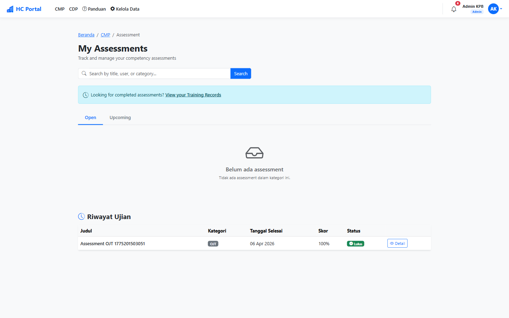
b. USERSistem menampilkan daftar paket assessment yang ditugaskan dengan status Open.
c. USERKlik tombol "Mulai" pada paket yang hendak dikerjakan.
d. USERBaca instruksi dan ketentuan, lalu klik "Setuju & Mulai".
e. USERKerjakan soal satu per satu. Timer berjalan di pojok kanan atas.
f. USERTipe soal yang tersedia: (1) Pilihan ganda; (2) Multiple answer; (3) Essay; (4) Mix.
g. USERGunakan tombol "Sebelumnya" / "Selanjutnya" untuk navigasi antar soal.
h. USERBila seluruh soal telah dijawab, klik "Submit". Sistem meminta konfirmasi.
i. USERSistem menyimpan jawaban, melakukan auto-grading untuk tipe non-essay, lalu menampilkan halaman Ringkasan Ujian.
j. USERUntuk soal Essay: skor pending sampai HC melakukan grading manual.
4. Melihat Rekam Jejak Assessment Pribadi (Records)
a. USERKlik menu CMP > Records.
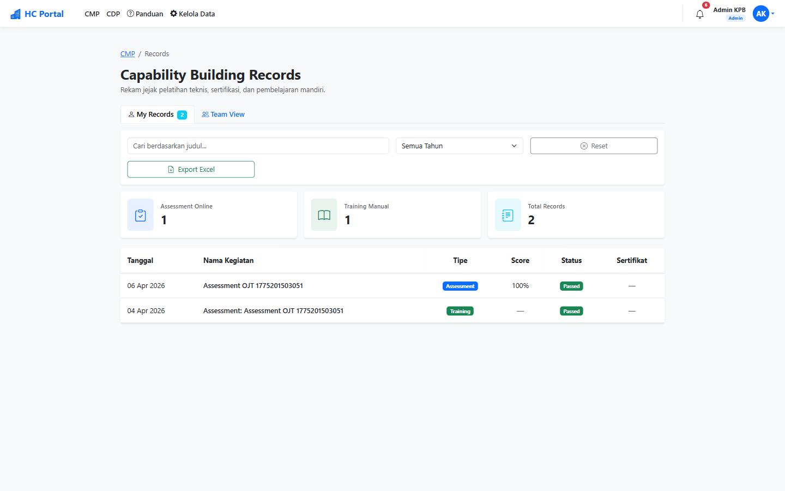
b. USERSistem menampilkan tabel seluruh riwayat assessment pribadi (kategori, nama paket, tanggal, skor, status).
c. USERKlik ikon mata pada salah satu baris untuk melihat detail hasil per soal.
d. USERGunakan filter tanggal / kategori untuk mempersempit tampilan.
5. Melihat Rekam Jejak Tim (Atasan/HC)
a. ATASAN/HCKlik menu CMP > Records lalu pilih tab Team View.
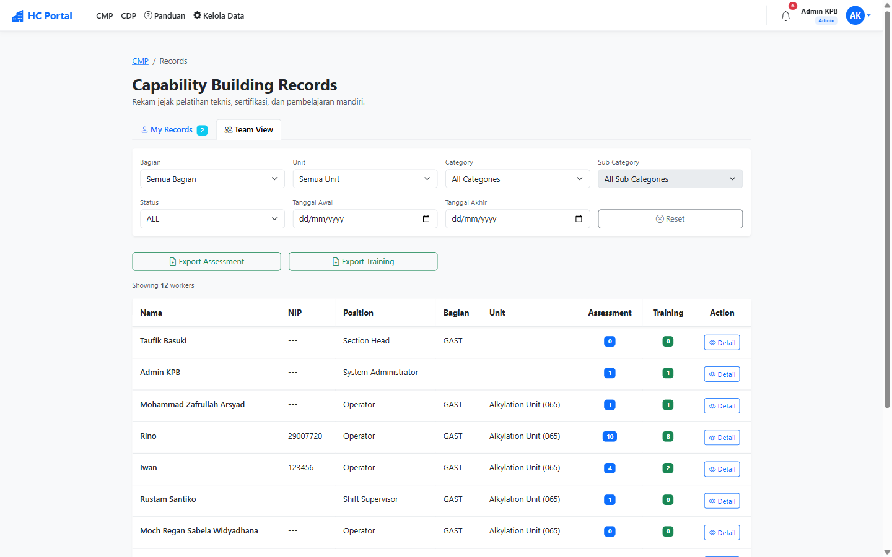
b. ATASAN/HCSistem menampilkan daftar bawahan sesuai hierarki organisasi.
c. ATASAN/HCKlik salah satu pekerja untuk melihat detail rekam jejak assessment per individu.
6. Melihat Daftar & Download Sertifikat Kompetensi
a. USERKlik menu CDP > Certification Management.
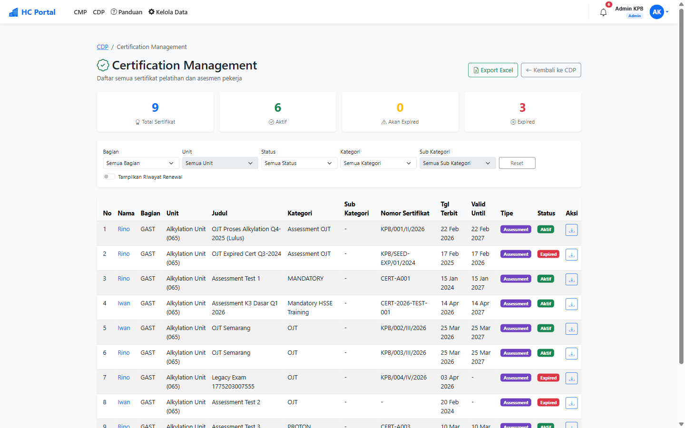
b. USERSistem menampilkan daftar sertifikat pribadi beserta status (Aktif / Akan Expired / Expired).
c. USERKlik ikon unduh untuk mendapatkan file PDF sertifikat.
d. USERSertifikat yang mendekati expired ditandai badge kuning; yang sudah expired badge merah.
7. Analytics Dashboard (HC)
a. HCKlik menu CMP > Analytics Dashboard.
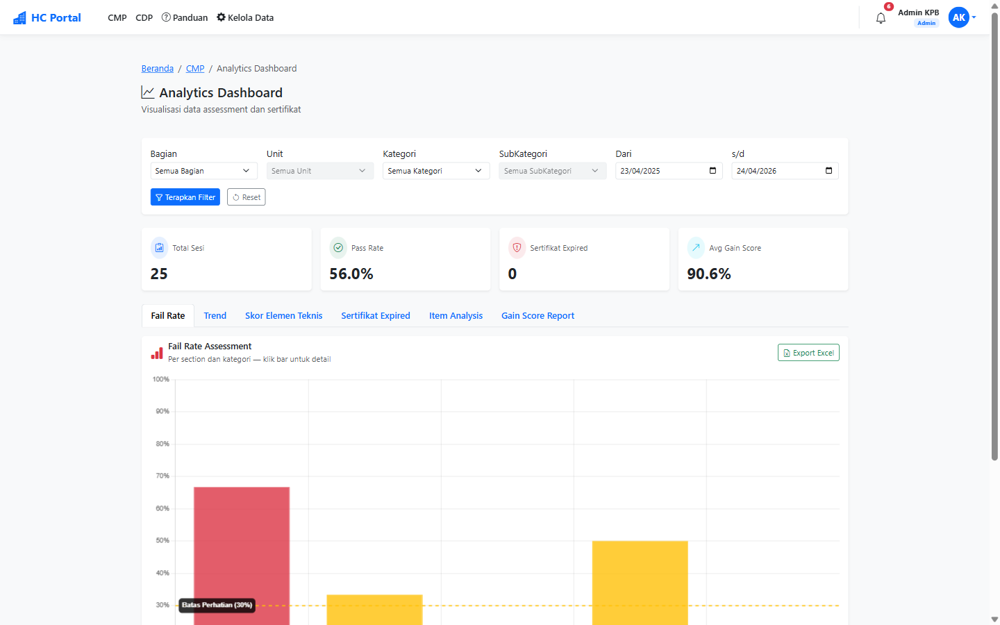
b. HCSistem menampilkan visualisasi: fail rate assessment, trend, skor elemen teknis, sertifikat expired, item analysis, dan gain score report.
c. HCGunakan filter periode & bagian untuk analisis spesifik.
d. HCEkspor data ke Excel untuk laporan manajemen.
C. MODUL CDP — CAREER DEVELOPMENT
Data IDP (track kompetensi, sub-kompetensi, deliverable) disusun dan di-upload oleh HC melalui menu HC > PROTON Data (lihat D.8). Role Coach, Coachee, dan Atasan hanya dapat melihat IDP sesuai lingkup akses masing-masing.
1. Melihat Individual Development Plan (IDP)
a. COACHEEKlik menu CDP > Plan IDP.
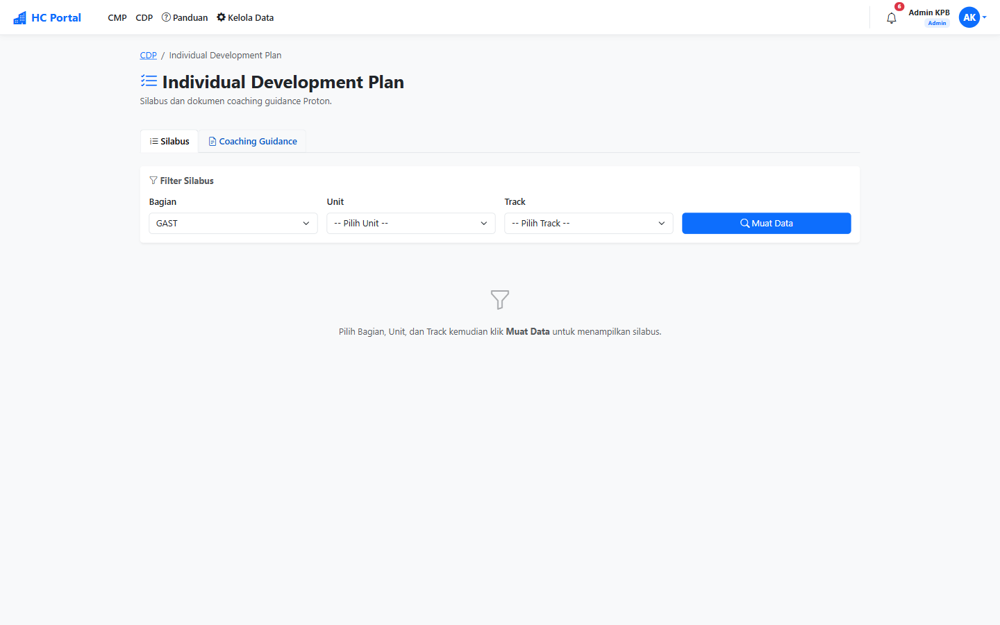
b. COACHEEPilih Bagian, Unit, dan Track, lalu klik Muat Data. Sistem menampilkan silabus IDP sesuai track yang di-assign oleh HC.
c. COACHEEKlik salah satu deliverable untuk melihat detail progress (lihat C.3 Halaman Deliverable).
d. COACHPada peran Coach, halaman Plan IDP menampilkan IDP seluruh coachee yang dipetakan. Gunakan filter untuk mempersempit tampilan.
e. ATASANPada peran Atasan, halaman Plan IDP menampilkan IDP bawahan langsung sesuai struktur organisasi.
2. Sesi Coaching PROTON
a. COACHKlik menu CDP > Proton Coaching.
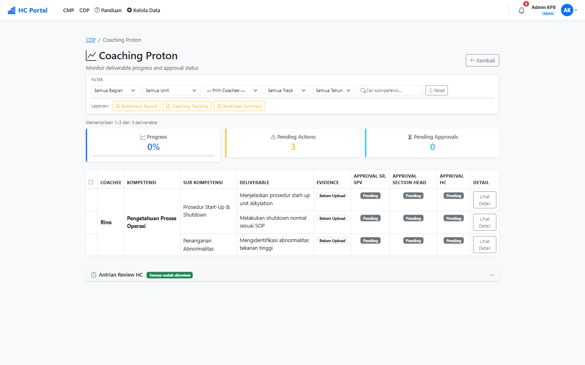
b. COACHSistem menampilkan daftar deliverable per coachee beserta status: Belum Upload / Pending Approval / Approved / Rejected.
c. COACHPilih deliverable tertentu, klik Lihat Detail untuk masuk ke halaman progress.
d. COACHInput sesi coaching mengikuti kerangka PROTON 5 fase: Purpose, Realita, Options, To-Do, Outcome & Next step.
e. COACHUpload bukti coaching (foto kegiatan, dokumen kerja, hasil OJT) bila ada.
f. COACHKlik "Simpan Sesi". Sistem mencatat sesi ke histori & memicu update progress deliverable.
3. Progress Deliverable — Lihat, Upload Evidence, Approval
a. SEMUADari halaman Plan IDP atau Coaching Proton, klik nama deliverable > sistem membuka halaman Deliverable.
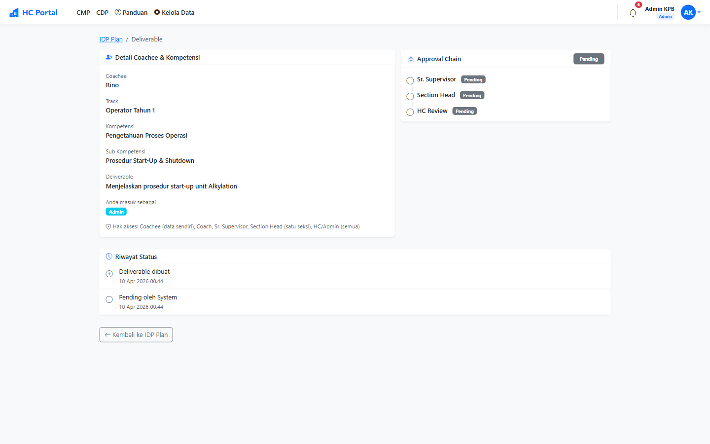
b. SEMUAHalaman menampilkan: detail coachee & kompetensi, approval chain (Sr. Supervisor > Section Head > HC Review), dan riwayat status.
c. COACHKlik "Upload Evidence" > pilih file (PDF/JPG/PNG, max 10 MB) > klik "Simpan".
d. COACHAlternatif: "Submit Evidence with Coaching" — upload evidence sekaligus input sesi coaching dalam satu form.
e. ATASANPada deliverable yang sudah berisi evidence, Sr. Supervisor / Section Head klik "Approve" bila sesuai, atau "Reject" dengan mengisi alasan.
f. HCLakukan HC Review sebagai approval final setelah reviewer memberikan approval tingkat-bagian.
g. SEMUAHistori seluruh aksi (upload, approve, reject, review) tercatat di bagian Riwayat Status halaman Deliverable.
4. Melihat Histori Coaching PROTON
a. USERKlik menu CDP > Histori Proton.
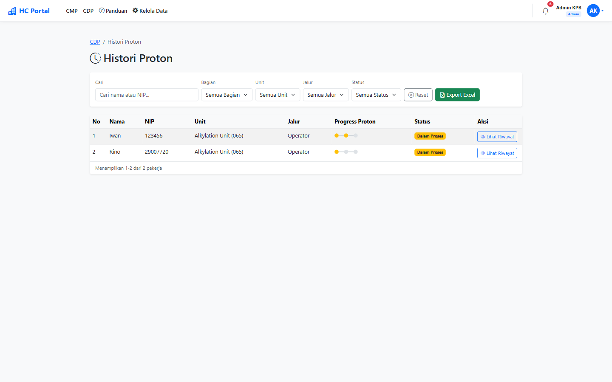
b. USERSistem menampilkan daftar pekerja beserta progress PROTON (Tahun 1, Tahun 2, Tahun 3) dan status (Lulus / Dalam Proses / Belum Mulai).
c. USERKlik "Lihat Riwayat" pada salah satu pekerja untuk melihat detail histori.
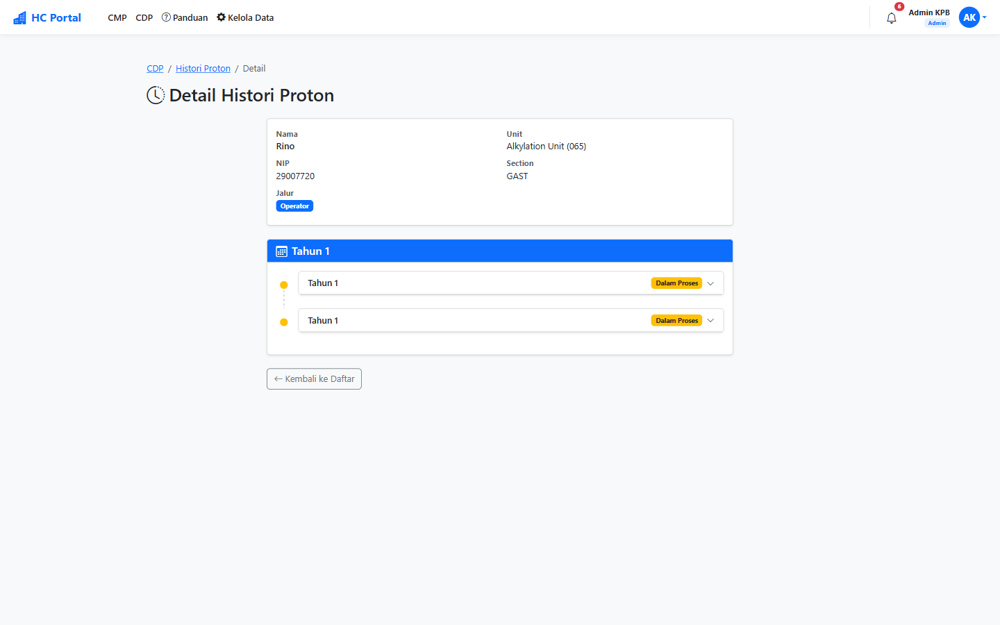
d. USERHalaman detail berisi data pekerja (Nama, NIP, Unit, Section, Jalur) serta timeline progress per tahun.
5. Melihat Daftar Sertifikasi Pribadi (Certification Management)
a. USERKlik menu CDP > Certification Management.
b. USERSistem menampilkan ringkasan: Total Sertifikat, Aktif, Akan Expired, Expired.
c. USERGunakan filter (Bagian, Unit, Status, Kategori) untuk mempersempit tampilan.
d. USERKlik salah satu baris atau ikon unduh untuk melihat detail dan mengunduh PDF sertifikat.
D. MODUL HC — PENGELOLAAN DATA & PENGEMBANGAN KOMPETENSI
Seluruh fitur di modul ini secara teknis dapat diakses oleh role Admin dan HC. Namun secara operasional, pengelolaan dilakukan oleh fungsi Human Capital (HC); peran Admin hanya untuk back-up teknis dan tidak dibahas pada TKI ini. Menu HC diakses melalui navbar "Kelola Data".
1. Kelola Data Pekerja
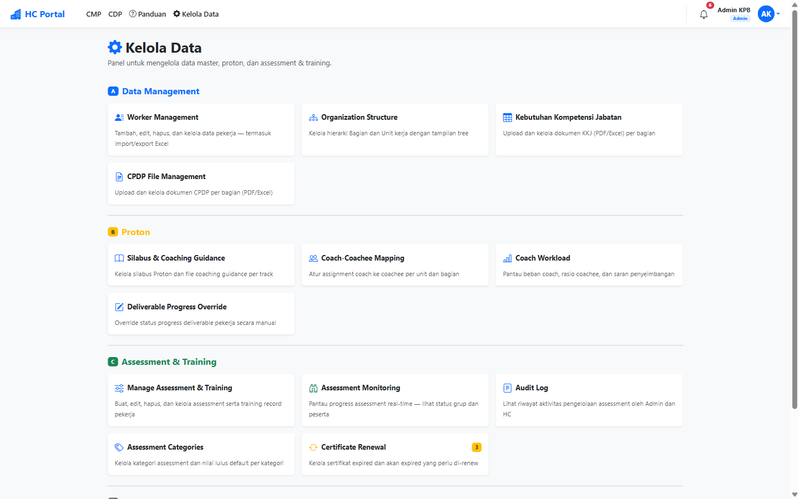
1.1 Tambah Pekerja Manual
a. HCKlik menu Kelola Data > Worker Management.
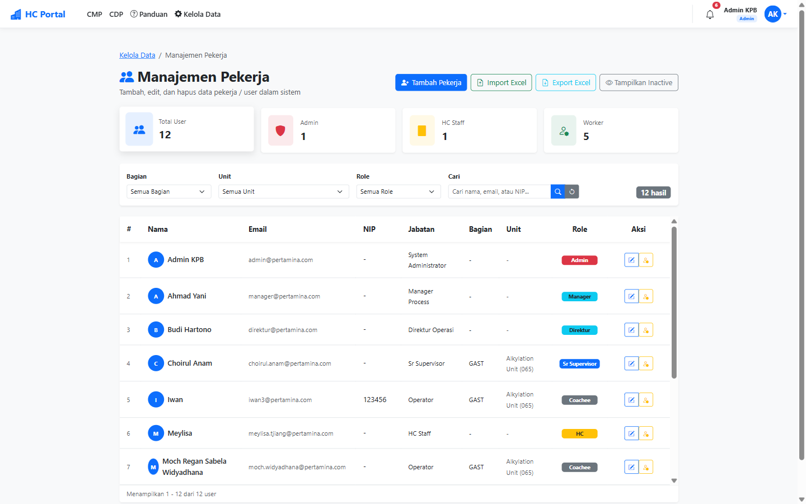
b. HCKlik "Tambah Pekerja".
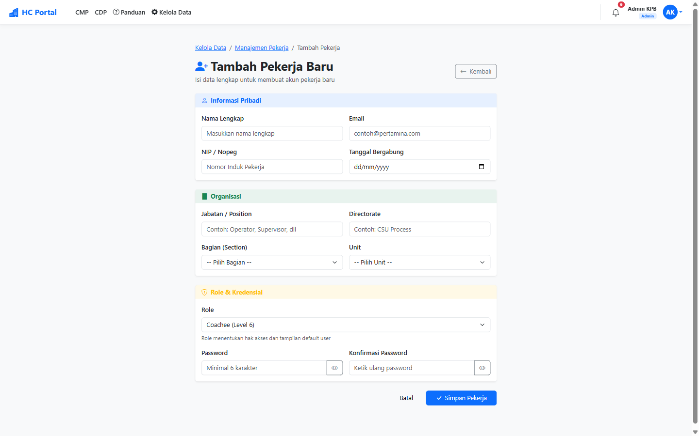
c. HCIsi form: Nama Lengkap, Email, NIP/Nopeg, Tanggal Bergabung, Jabatan, Directorate, Bagian, Unit.
d. HCPilih role pekerja: Admin / HC / Direktur / VP / Manager / Section Head / Sr Supervisor / Coach / Supervisor / Coachee.
e. HCTentukan password & konfirmasi password (minimal 6 karakter).
f. HCKlik "Simpan Pekerja".
1.2 Import Pekerja Massal via Excel
a. HCPada halaman Worker Management, klik "Import Excel".
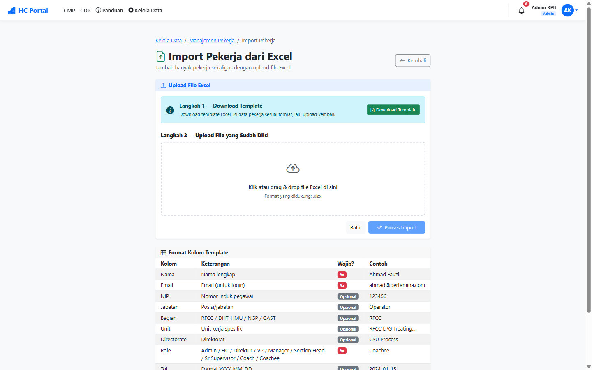
b. HCKlik "Download Template" untuk mendapatkan template Excel (lihat Lampiran II).
c. HCIsi template sesuai kolom yang disediakan: Nama, Email, NIP, Jabatan, Bagian, Unit, Directorate, Role, Tgl Bergabung, Password. Jangan ubah header.
d. HCUpload file Excel (drag & drop atau klik area upload).
e. HCKlik "Proses Import". Sistem melakukan validasi dan bulk insert dengan ringkasan hasil (berhasil / error / dilewati).
1.3 Edit & Detail Pekerja
a. HCPada daftar pekerja, klik ikon Edit untuk mengubah data pekerja.
b. HCEdit field yang diperlukan (termasuk perubahan Role yang akan me-refresh akses pengguna) lalu klik Simpan.
c. HCKlik nama pekerja untuk masuk ke halaman Worker Detail berisi ringkasan lengkap beserta riwayat assessment & training.
2. Struktur Organisasi
a. HCKlik menu Kelola Data > Organization Structure.
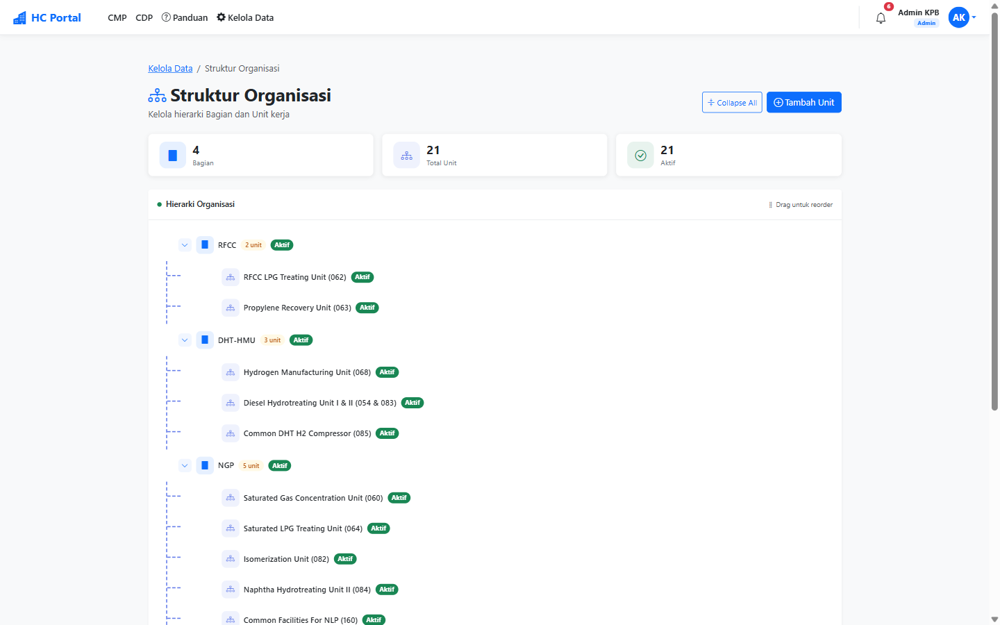
b. HCSistem menampilkan pohon organisasi (Bagian > Unit) beserta ringkasan jumlah Bagian, Unit, dan status Aktif.
c. HCKlik panah pada node Bagian untuk expand daftar Unit di dalamnya.
d. HCKlik "Tambah Unit" untuk menambah Unit baru ke Bagian, atau ikon edit/hapus pada node untuk modifikasi.
3. Pemetaan Coach ↔ Coachee
a. HCKlik menu Kelola Data > Coach-Coachee Mapping.
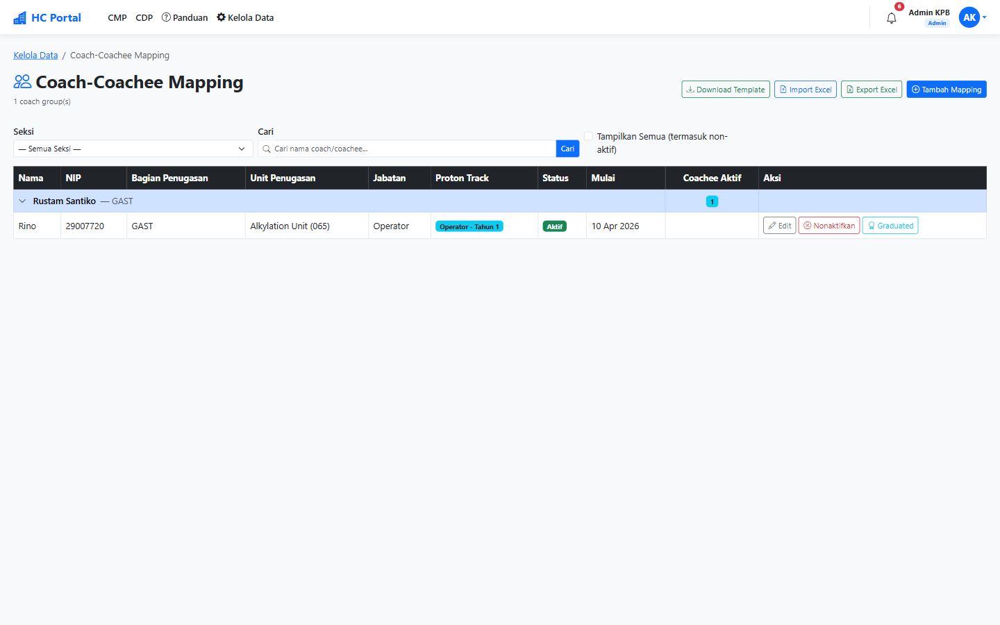
b. HCKlik "Tambah Mapping" untuk assign coach ke coachee baru. Alternatif: import via Excel.
c. HCPilih Seksi dan gunakan kolom Cari untuk mempersempit tampilan coach/coachee tertentu.
d. HCAksi per mapping: Edit, Nonaktifkan, Graduated (tandai coachee telah selesai program).
e. HCUntuk memonitor beban coach, klik menu Kelola Data > Coach Workload.
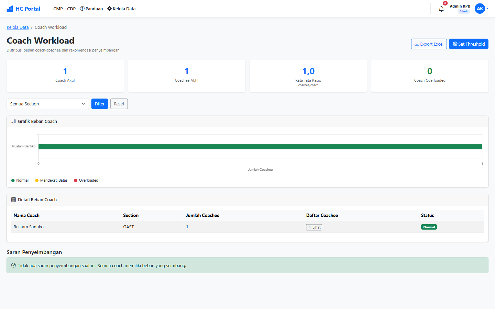
f. HCSistem menampilkan jumlah coachee per coach beserta warning bila melampaui threshold (overloaded).
g. HCKlik "Set Threshold" untuk menyesuaikan batas maksimum coachee per coach.
4. Kelola Kategori & Paket Soal Assessment
4.1 Kelola Kategori
a. HCKlik menu Kelola Data > Assessment Categories.
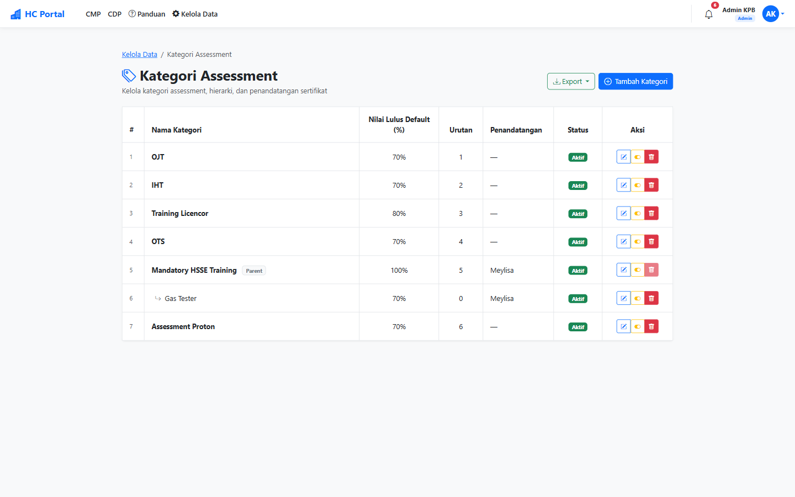
b. HCSistem menampilkan daftar kategori beserta nilai lulus default (%) dan penandatangan sertifikat.
c. HCKlik "Tambah Kategori" untuk membuat kategori baru, atau ikon Edit/Hapus pada baris yang sudah ada.
4.2 Kelola Paket Assessment
a. HCKlik menu Kelola Data > Manage Assessment & Training.
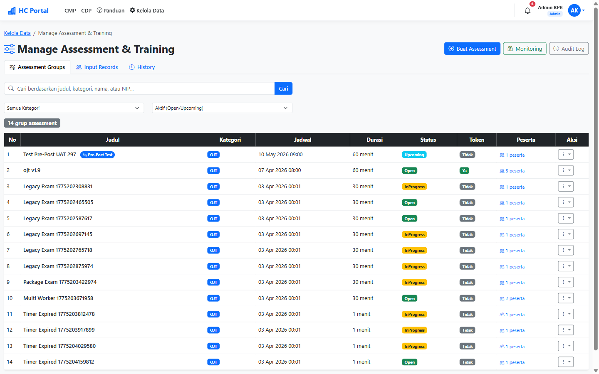
b. HCSistem menampilkan daftar assessment beserta kategori, jadwal, durasi, status (Open / Upcoming / InProgress / Closed), token, dan jumlah peserta.
c. HCKlik "Buat Assessment" > isi: nama paket, kategori, durasi, passing score, tipe (Online / Manual / PreTest / PostTest), tanggal buka/tutup.
d. HCKlik "Simpan".
4.3 Import Soal via Excel
a. HCMasuk ke detail paket assessment > klik "Import Soal Excel".
b. HCDownload template sesuai tipe: Essay / Multiple Answer / Mix (lihat Lampiran I).
c. HCIsi template, upload, lakukan preview, lalu konfirmasi.
d. HCKlik "Preview Paket" untuk melihat tampilan akhir sebelum di-assign ke peserta.
4.4 Penugasan Peserta (Assign Assessment)
a. HCPada detail paket, klik "Assign Peserta".
b. HCPilih peserta via filter (bagian, jabatan) atau multi-select manual.
c. HCKlik "Assign". Peserta menerima notifikasi di HC Prime.
5. Monitoring Assessment Realtime
a. HCKlik menu Kelola Data > Assessment Monitoring.
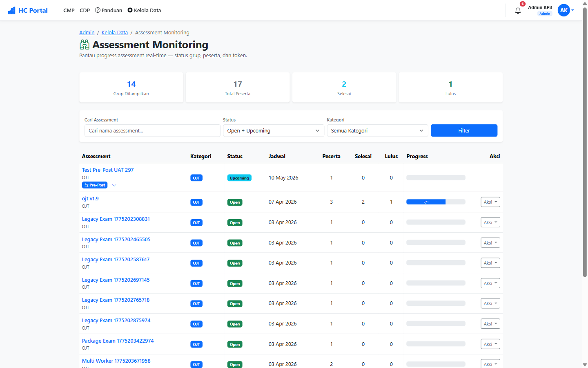
b. HCSistem menampilkan ringkasan: Grup Ditampilkan, Total Peserta, Selesai, Lulus.
c. HCTabel monitoring berisi progress per assessment (jumlah peserta, jumlah selesai, jumlah lulus, progress bar).
d. HCKlik salah satu assessment untuk melihat detail per peserta: soal ke-n, sisa waktu, status realtime (via SignalR).
e. HCUntuk input hasil assessment manual (misal hasil interview), pakai tab Input Records pada halaman Manage Assessment & Training.
6. Kelola Data Training Korporat
a. HCKlik menu Kelola Data > Manage Assessment & Training > tab Input Records.
b. HCKlik "Add Training" untuk menambahkan record training secara manual, atau "Import Training" untuk import massal via Excel.
c. HCEdit record training peserta melalui ikon Edit. Upload sertifikat pendukung bila ada.
7. Upload Dokumen KKJ & CPDP
a. HCKlik menu Kelola Data > Kebutuhan Kompetensi Jabatan.
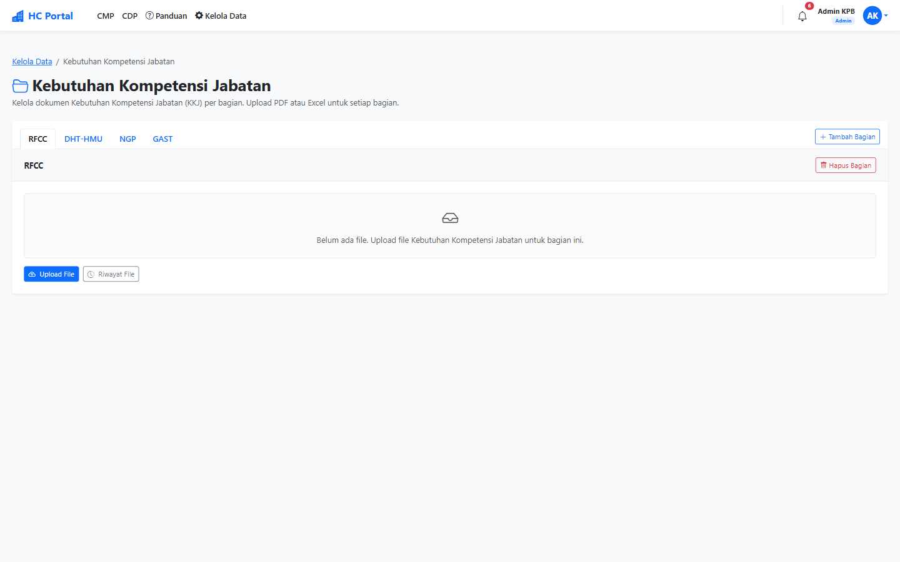
b. HCPilih tab bagian (RFCC / DHT-HMU / NGP / GAST).
c. HCKlik "Upload File" > pilih file KKJ (PDF/Excel, max 10 MB).
d. HCSistem menyimpan dengan format nama file: yyyyMMddHHmmssfff_{GUID}_{namafile}.
e. HCKlik "Riwayat File" untuk melihat history versi dokumen.
f. HCUntuk CPDP: menu Kelola Data > CPDP File Management dengan alur serupa.
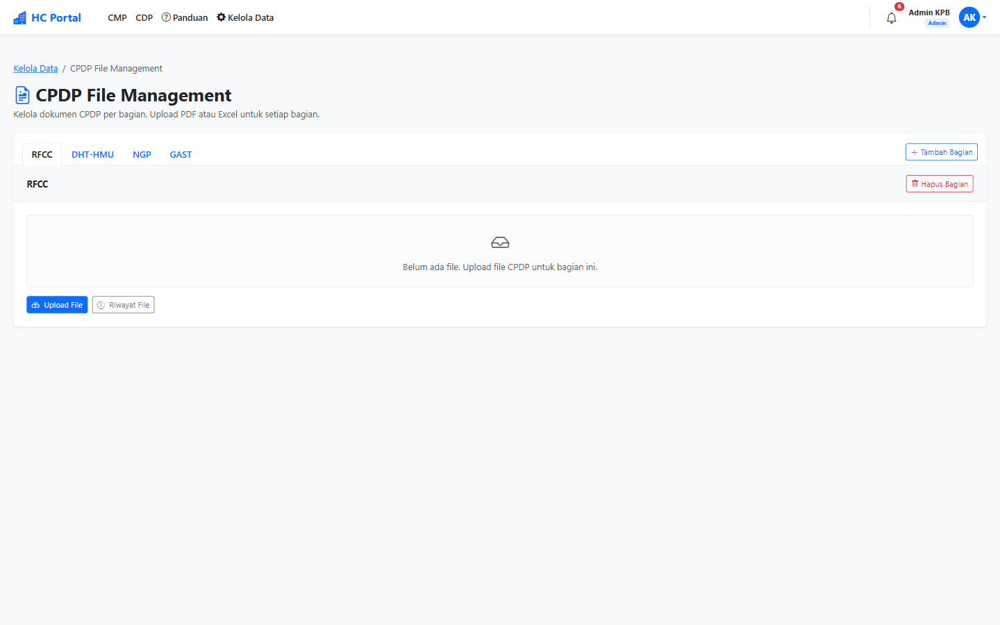
8. PROTON Data — Setup IDP (Track, Kompetensi, Deliverable)
a. HCKlik menu Kelola Data > Silabus & Coaching Guidance.
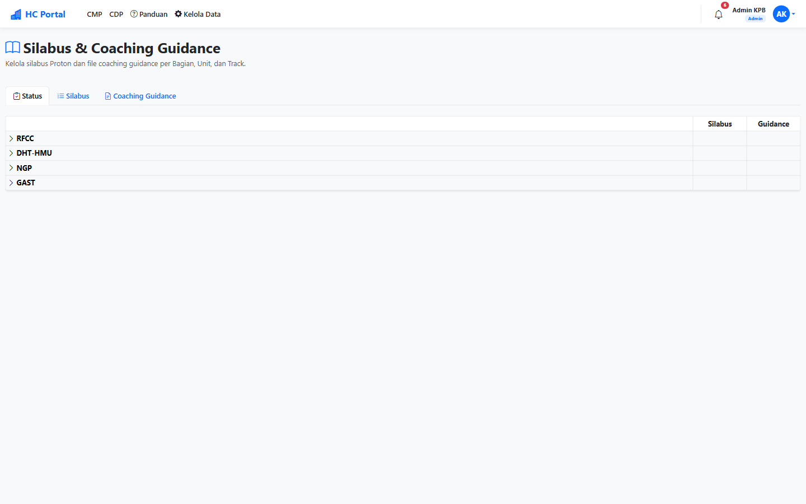
b. HCPilih tab Status / Silabus / Coaching Guidance sesuai kebutuhan.
c. HCPada tab Silabus, klik "Import Silabus Excel" untuk upload silabus baru.
d. HCDownload template > isi dengan struktur: Track > Kompetensi > Sub-Kompetensi > Deliverable.
e. HCUpload file > preview > konfirmasi.
f. HCUntuk revisi entri tunggal, gunakan menu Kelola Data > Deliverable Progress Override.
g. HCSetelah data ter-upload, lakukan Track Assignment melalui mekanisme Coach-Coachee Mapping agar coachee tertentu terhubung ke track PROTON.
9. Budget Training (Perencanaan Anggaran)
a. HCKlik menu CMP > Budget Training (akses terbatas role HC/Admin).
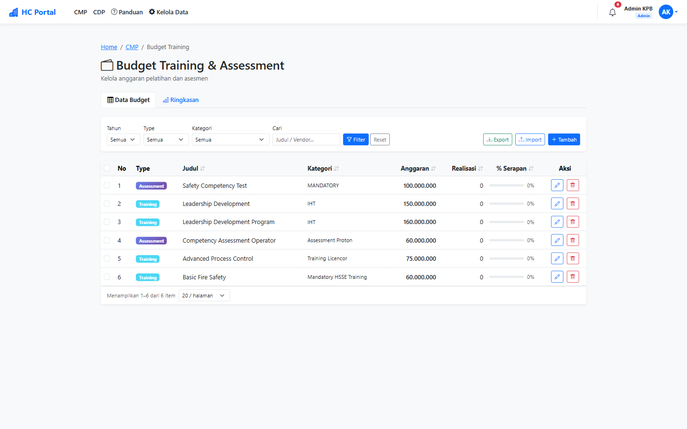
b. HCSistem menampilkan daftar anggaran training tahun berjalan beserta realisasi dan persentase serapan.
c. HCKlik "Tambah" untuk input budget baru: nama training, vendor, peserta target, estimasi biaya, tahun anggaran.
d. HCAlternatif: klik "Import" untuk input massal via Excel.
e. HCUpdate realisasi biaya via tombol inline, atau gunakan modal Bulk Update Realisasi.
f. HCKlik "Export" untuk mengunduh laporan anggaran dalam format Excel.
10. Renewal Sertifikat
a. HCKlik menu Kelola Data > Certificate Renewal.
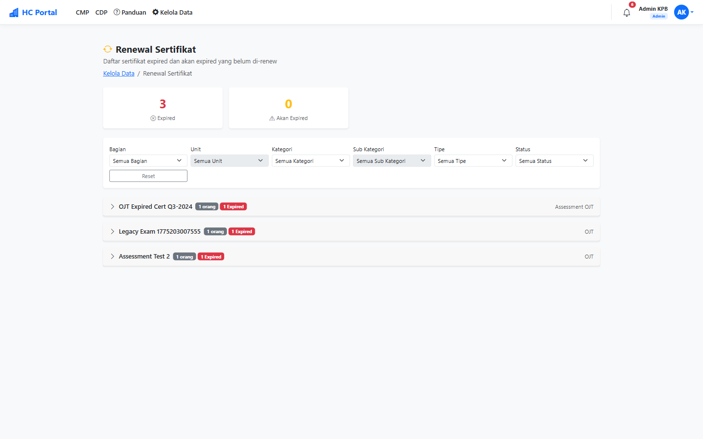
b. HCSistem menampilkan ringkasan jumlah sertifikat Expired dan Akan Expired beserta daftar per assessment.
c. HCGunakan filter Bagian, Unit, Kategori, Sub Kategori, Tipe, Status untuk mempersempit tampilan.
d. HCKlik grup sertifikat untuk expand daftar pekerja yang memiliki sertifikat tersebut.
e. HCTandai sertifikat sebagai Renewal Processed setelah pekerja mengikuti training renewal.
E. SISTEM & MONITORING
LABEL: TIDAK DISARANKAN DIMASUKKAN KE TKI FINALBagian ini dipertahankan dalam outline sebagai referensi lengkap fungsionalitas website, namun seluruh isinya bersifat operasional teknis (audit log, maintenance mode, impersonation) yang merupakan ranah tim IT/Admin sistem, bukan prosedur kerja pengelolaan kompetensi oleh HC. Rekomendasi: saat kompilasi TKI Final, bagian E ini sebaiknya dipindahkan ke dokumen SOP IT terpisah atau dihapus dari TKI.
1. Notifikasi
a. USERPada navbar, ikon lonceng menampilkan jumlah notifikasi unread.
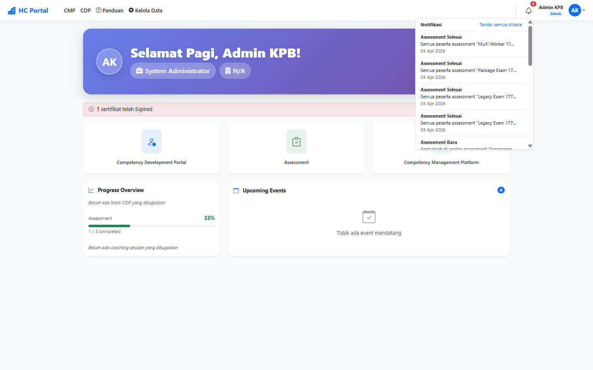
b. USERKlik ikon untuk menampilkan dropdown daftar notifikasi terbaru (Assessment Selesai, Assessment Baru, Sertifikat Expired, dll.).
c. USERKlik salah satu item > sistem mengarah ke halaman terkait & menandai notifikasi sebagai read.
d. USERKlik "Tandai semua dibaca" untuk menandai seluruh notifikasi read sekaligus.
2. Audit Log
a. HCKlik menu Kelola Data > Audit Log.
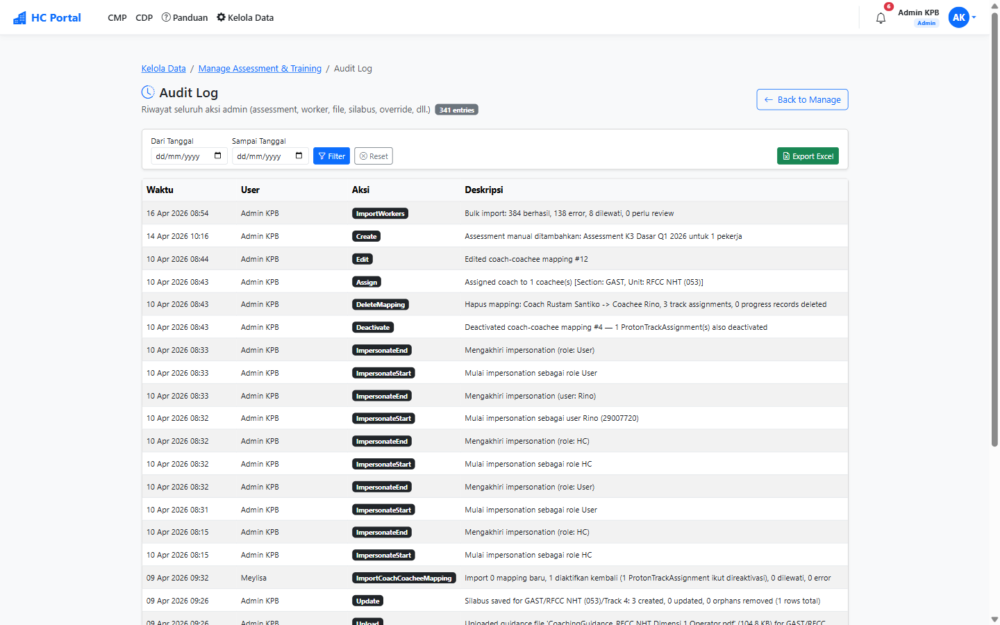
b. HCSistem menampilkan riwayat seluruh aksi admin/HC (assessment, worker, file, silabus, override, impersonation, dll.) beserta timestamp, user, aksi, dan deskripsi.
c. HCGunakan filter Dari Tanggal & Sampai Tanggal, lalu klik "Filter" untuk mempersempit tampilan.
d. HCKlik "Export Excel" untuk mengunduh log dalam format Excel.
3. Maintenance Mode
a. HCKlik menu Kelola Data > Maintenance Mode.
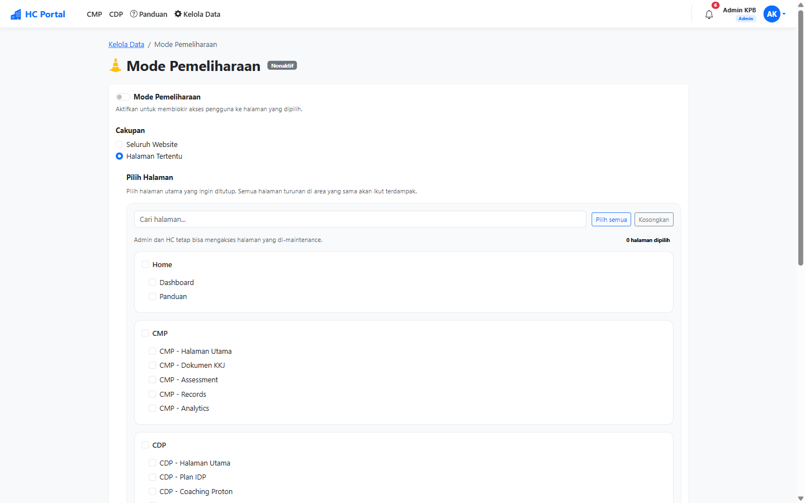
b. HCAktifkan toggle Mode Pemeliharaan untuk memblokir akses pengguna ke halaman yang dipilih.
c. HCPilih cakupan: Seluruh Website atau Halaman Tertentu (pilih halaman per area: Home, CMP, CDP, Akun, Admin).
d. HCIsi pesan maintenance dan estimasi selesai. Admin dan HC tetap dapat mengakses halaman yang di-maintenance.
e. HCKlik "Simpan Pengaturan". Setelah selesai, toggle kembali ke nonaktif untuk mengembalikan akses normal.
4. Impersonation (Troubleshooting)
a. HCKlik menu Kelola Data, lalu pilih Impersonate.
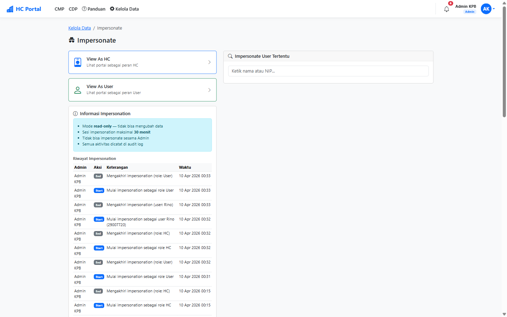
b. HCPilih View As HC / View As User untuk melihat portal sebagai peran tertentu, atau gunakan kolom pencarian untuk impersonate user spesifik (NIP/nama).
c. HCMode impersonation bersifat read-only — tidak dapat mengubah data. Sesi maksimal 30 menit.
d. HCBanner impersonation tampil di top halaman. Klik Stop Impersonation untuk kembali ke sesi HC. Wajib stop impersonation setelah selesai troubleshoot.
XI. INDIKATOR & UKURAN KEBERHASILAN
A. Adopsi Platform
1. >= 95% pekerja CSU Process (NGP, GAST, RFCC, DHT & HMU, Utilities II) login aktif minimal 1x per bulan.
2. 100% pekerja ISBL & OSBL memiliki akun HC Prime terdaftar dan teraktivasi.
B. Assessment
1. >= 90% pekerja menyelesaikan assessment KKJ wajib tahunan sesuai jadwal.
2. Rata-rata skor assessment >= 75% (passing score).
3. <= 5% peserta mengalami disconnect/drop selama sesi assessment.
4. 100% soal Essay ter-grading manual oleh HC <= 14 hari setelah submit.
C. IDP & Coaching PROTON
1. 100% pekerja Production/Operations Team memiliki track IDP aktif di platform.
2. >= 80% deliverable IDP per coachee tercatat progress-nya (upload evidence oleh Coach).
3. >= 80% sesi coaching PROTON terdokumentasi di platform.
4. Rata-rata >= 1 sesi coaching per coachee per bulan.
5. Gap closure kompetensi teknis >= 20% per semester (perbandingan skor assessment sebelum-sesudah).
6. Beban coach <= 10 coachee per coach.
D. Sertifikasi & Training
1. 0 sertifikat expired tanpa rencana renewal terdaftar di menu Renewal Certificate.
2. >= 80% training mandatory (Safety for Refinery, Gas Tester, SUPREME, PSAIMS, ERP, Confined Space) ter-complete per pekerja sesuai periode.
3. >= 90% sertifikat training ter-upload ke platform.
E. Kualitas Data & Governance
1. Matriks KKJ terupdate setiap perubahan organisasi dalam <= 30 hari.
2. Seluruh dokumen KKJ/CPDP per bagian memiliki history versi yang ter-track di platform.
3. <= 1% kasus data mismatch antara HC Prime dengan sistem HC Core.
XIV. LAMPIRAN (Usulan)
- Lampiran I — Template Excel Import Soal (Essay / Multiple Answer / Mix)
- Lampiran II — Template Excel Import Worker
- Lampiran III — Template Excel Import Training
- Lampiran IV — Template Excel Import Silabus PROTON
- Lampiran V — Template Excel Import Budget Training
- Lampiran VI — Flowchart Alur Assessment Online
- Lampiran VII — Flowchart Alur Coaching PROTON (5 fase) & Deliverable Approval
- Lampiran VIII — Matriks Akses per Role (HC / Atasan / Coach / Coachee / User)
- Lampiran IX — Daftar URL & Environment